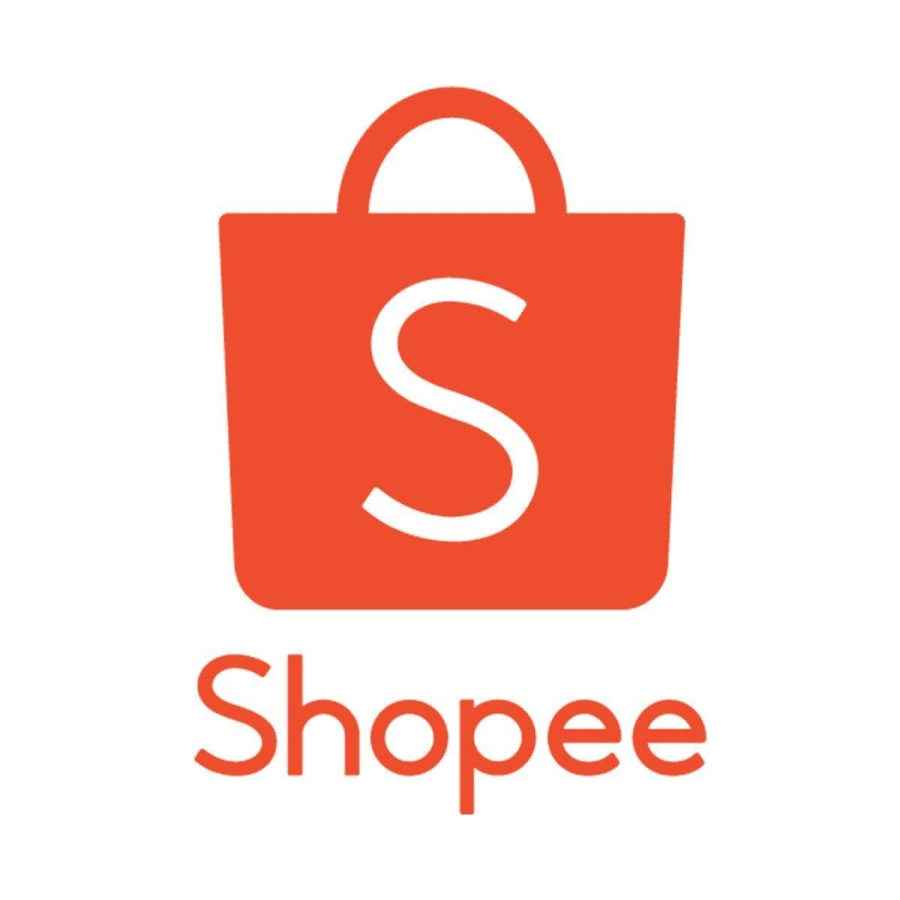
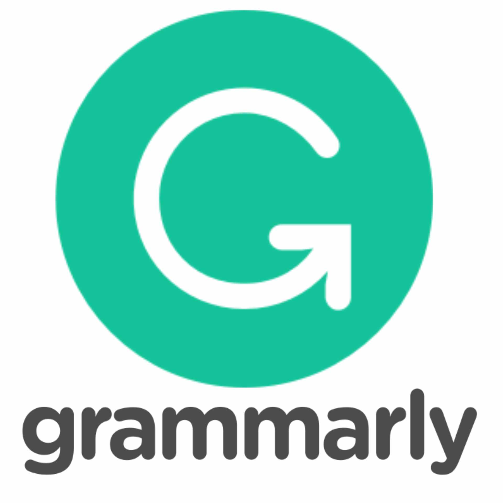
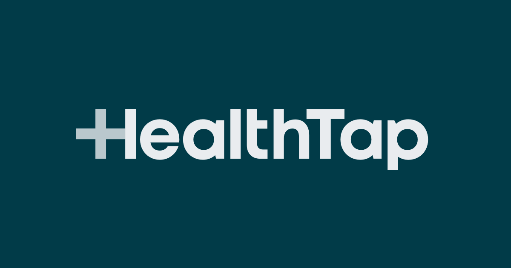

Foodpanda is an online food and grocery delivery platform brand owned by Delivery Hero.In 2012, Lukas Nagel and Rico Wyder established Foodpanda in Singapore and later expanded in Malaysia, Indonesia, Thailand.[4][5]
Foodpanda was launched in 2013 in Romania and in 2014 expanded in Hungary and Balkans.

Shopee Pte Ltd is a Singaporean multinational technology company which focuses mainly on e-commerce. Headquartered under Sea Group (previously known as Garena), Shopee was first launched in Singapore in 2015, and later expanded its reach to Malaysia, Thailand, Taiwan, Indonesia, Vietnam, the Philippines, Brazil, Mexico, Chile, and Colombia. It is also available in mainland China, Hong Kong, Japan, and South Korea as seller centres.
In February 2015, Shopee launched in Singapore as a social-first, mobile-centric marketplace where users can browse, shop and sell. Integrated with logistical and payment support, the asset-light platform claims to make online shopping easy and secure for both sellers and buyers.

Grammarly is a Ukrainian-origin American-headquartered cross-platform cloud-based writing assistant that reviews spelling, grammar, punctuation, clarity, engagement, and delivery mistakes. It uses AI to identify and search for an appropriate replacement for the mistake it locates. It also allows users to customize their style, tone, and context-specific language. It was launched in 2009 by Alex Shevchenko, Max Lytvyn, and Dmytro Lider

HealthTap is a technology company delivering a suite of connected health apps. Their customers include health systems, insurance companies, and (self-insured) employers.
The company received Series A funding from the Mayfield Fund, Eric Schmidt’s Innovation Endeavors and Mohr Davidow Ventures
The main service offered by HealthTap is the ability to ask health questions, online and via mobile devices, to a network of U.S.-licensed physicians for free. They also offer the ability to connect immediately or by appointment with a doctor for a consultation via video conference, phone call, or text chat.